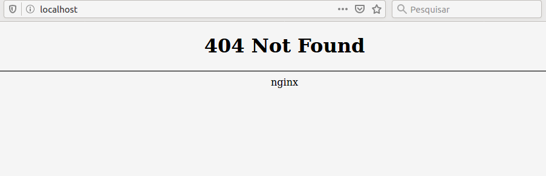

Conjunto de containers(serviços) que contém, dentre vários, os containers que iremos utilizar em nosso projeto.
Em nosso projeto utilizamos o Docker para rodar containers, que são como máquinas virtuais.
O Laradock é um conjunto destes containers, ele contém, dentre vários, os containers nginx(servidor php), mysql(banco de dados) e phpmyadmin(gerenciador de banco de dados) que usaremos em nosso projeto.
Utilizar containers do laradock através do Docker no Ubuntu é fácil, abra o terminal e execute os códigos abaixo. Aconselhamos a não copiar e colar, e sim digitar todos os comandos, assim você estará aprendendo muito mais!
Abra o terminal e atualize os pacotes:
O Laradock está disponível no Github, então usaremos o Git para cloná-lo, isto é, baixá-lo e salvar na pasta laradock:
Acesse a pasta laradock:
Renomeie o arquivo env-example para .env:
Suba o container nginx(servidor php) para testar:
Nota: É normal que a primeira execução do container demore, pois quando executada pela primeira vez, o docker baixa a imagem do container e, dependendo da conexão, pode demorar. As próximas execuções serão mais rápidas pois os arquivos já terão sido baixados!
Se tudo estiver ok, ao acessar o localhost:80 pelo navegador você deverá ver uma página como esta

Isto significa que o servidor nginx está online!
Para encerrar o(s) container(s) execute: